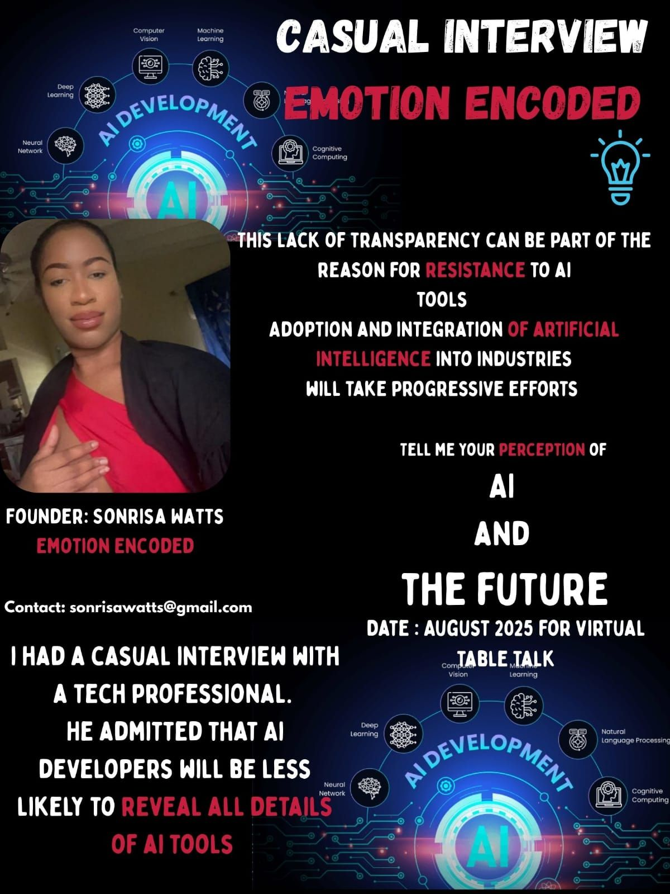
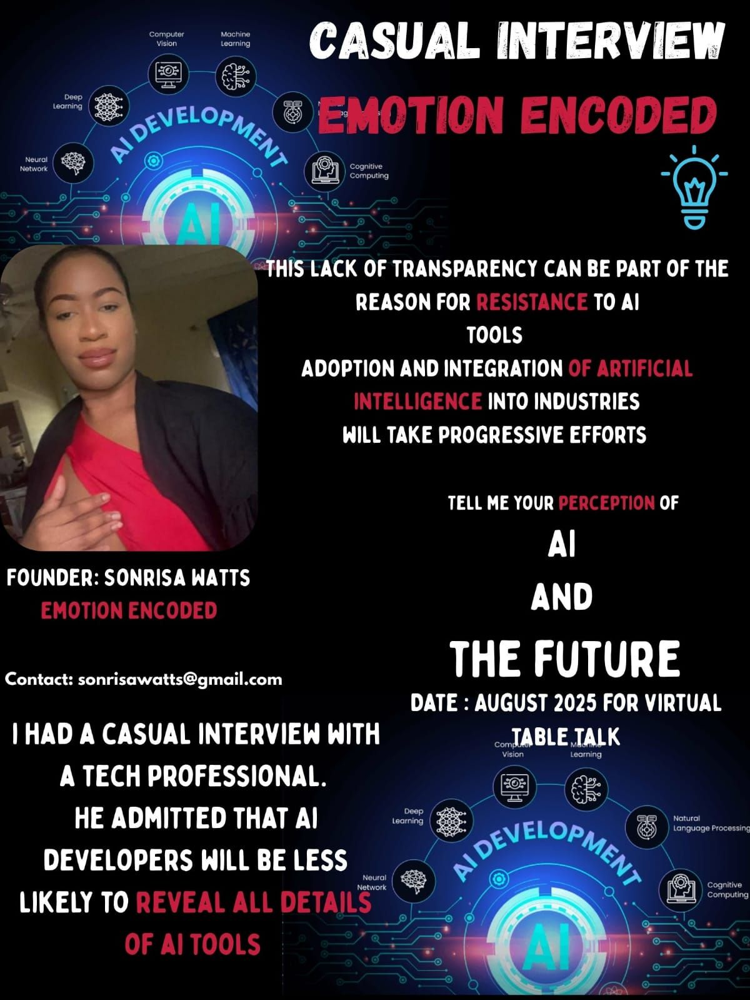

AI Advisors vs AI Therapists: Who Do We Trust?
I conducted research in the Caribbean Region (St. Kitts & Nevis) asking: "Who would you trust more: An AI Advisor or an AI Therapist?"
Read More →


By Sonrisa Watts: Exploring the intersection of psychology and AI to build trust and transparency.
Emotion Encoded is a research initiative based in St.Kitts and Nevis dedicated to understanding how emotional reasoning, cultural context, and psychological resistance shape human responses to AI.
Shaping AI people can trust by first understanding the psychological factors that shape human perception of it. By conducting interviews with experts in law, medicine/healthcare, finance, and education, and gaining perceptions and insight from the general population, Emotion Encoded helps to align AI systems with the human mind, not just with data, ensuring their effective adoption. Emotion Encoded investigates how trust, cognitive bias and transparency shape AI adoption in high stake domains. Dedicated to using Psychology to Decode Emotional Barriers to AI Adoption.
I conducted research in the Caribbean Region (St. Kitts & Nevis) asking: "Who would you trust more: An AI Advisor or an AI Therapist?"
Read More →
At Emotion Encoded, we explore the intersection of psychology and artificial intelligence, investigating how human perception, cognitive biases, and resistance shape the adoption and impact of emerging technologies.
Read More →
 


My research findings has been referenced in a national policy proposal on digital literacy in St. Kitts & Nevis.

Click the image to view the full proposal.
Exploring the latest insights and discussions on artificial intelligence and superintelligence.
At Emotion Encoded, we are committed to empowering women and youth to harness the potential of AI in their small businesses. Through our AI Small Business Innovation Project, recipients of microgrants will have the opportunity to integrate AI tools that drive innovation, efficiency, and growth — all while promoting responsible and ethical AI use.